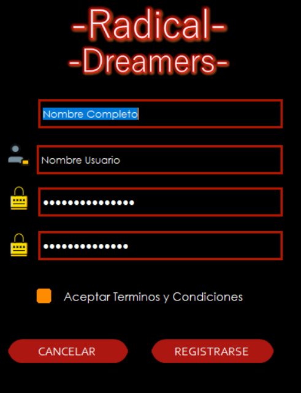

Inicio de Sesion
Esta es la pantalla de inicio de sesion, si posee cuenta puede ingresar sin ningun problema,
sino se posee, debera pasar al registro a crear una,
Registro
Se debe ingresar el Nombre Completo, usuario, una contraseña , volver a escribir esta contraseña,
ademas se deben aceptar los terminos y condiciones, y darle click a registrarse, si todos los datos esta correctos,
le aparecera la pantalla de inicio de sesion
